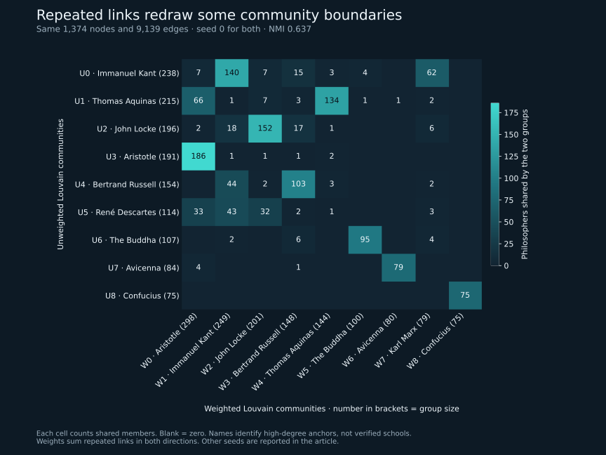

Week 04 · Communities & backbones · Go Nuts
One link or
twenty-four?
Do repeated Wikipedia links change which communities philosophers belong to?
Keep the philosophers and their connections fixed. Change only whether an edge counts once—or as many times as the articles link to each other.
See the community comparison ↓01 · The comparison
Frequency changes what the algorithm sees.
In an unweighted network, mentioning another philosopher once or repeatedly creates the same single edge. In a weighted network, repeated hyperlinks give that connection more weight. Louvain groups nodes by seeking high modularity: more internal connection than expected under its degree-based, or strength-based, baseline. Weighting therefore changes both the observed connections’ contributions and the objective’s baseline.
We already explored communities and weights in the Week 4 exercises. This post combines them into the weighted-versus-unweighted experiment suggested in exercise 4.13. We compare partitions—not whether a larger weighted modularity is “better.” Those scores use different quantities and are not directly comparable.
02 · Where the groups overlap
Nine groups each. Different memberships.
For the fixed illustrative seed, 0, both runs find nine communities. The memberships are only partially aligned: NMI = 0.637. Normalized mutual information measures agreement between partitions without relying on arbitrary group numbers. A value of 1 means the same grouping; 0 means no shared information. It is not a percentage of correct philosophers.

Some groups survive nearly intact: all 75 members of the Confucius-anchored group stay together, and 79 of 84 in the Avicenna-anchored group share a weighted group. Other boundaries change: the 114-member Descartes-anchored group distributes mainly across the weighted Aristotle (33), Kant (43) and Locke (32) groups. A similar community count can conceal substantial reorganization.
Read the figure’s exact counts as a table
| Unweighted / weighted | W0 | W1 | W2 | W3 | W4 | W5 | W6 | W7 | W8 |
|---|---|---|---|---|---|---|---|---|---|
| U0 | 7 | 140 | 7 | 15 | 3 | 4 | 0 | 62 | 0 |
| U1 | 66 | 1 | 7 | 3 | 134 | 1 | 1 | 2 | 0 |
| U2 | 2 | 18 | 152 | 17 | 1 | 0 | 0 | 6 | 0 |
| U3 | 186 | 1 | 1 | 1 | 2 | 0 | 0 | 0 | 0 |
| U4 | 0 | 44 | 2 | 103 | 3 | 0 | 0 | 2 | 0 |
| U5 | 33 | 43 | 32 | 2 | 1 | 0 | 0 | 3 | 0 |
| U6 | 0 | 2 | 0 | 6 | 0 | 95 | 0 | 4 | 0 |
| U7 | 4 | 0 | 0 | 1 | 0 | 0 | 79 | 0 | 0 |
| U8 | 0 | 0 | 0 | 0 | 0 | 0 | 0 | 0 | 75 |
03 · Is this just a lucky seed?
Compare the change with the algorithm’s own variability.
Louvain can settle on different partitions depending on node visiting order. We ran each treatment with seeds 0–19, resolution 1, on the identical graph. Unweighted runs found 8–10 communities; weighted runs found 7–10. The figure uses seed 0 by a fixed convention, not the seed with the most striking difference.
| Comparison | Pairs | Mean NMI | Minimum–maximum |
|---|---|---|---|
| Unweighted vs unweighted · different seeds | 190 | 0.720 | 0.604–0.833 |
| Weighted vs weighted · different seeds | 190 | 0.756 | 0.645–0.877 |
| Unweighted vs weighted · all seed pairs | 400 | 0.658 | 0.542–0.751 |
| Unweighted vs weighted · matching seed numbers | 20 | 0.665 | 0.606–0.744 |
Finding: agreement across the weighted/unweighted boundary averages 0.658, below agreement across seeds within unweighted (0.720) or weighted (0.756) runs. Repeated-link weighting changes the grouping beyond simply giving the groups different names. However, the ranges overlap: the effect sits alongside meaningful algorithmic uncertainty.
These are descriptive comparisons, not a significance test. The 400 cross-model pairs reuse the same 40 runs and are not 400 independent experiments. A matching seed number is a useful convention, not a guarantee that both optimizations follow the same sequence of decisions.
All 20 matching-seed comparisons
| Seed | Unweighted groups | Weighted groups | NMI |
|---|---|---|---|
| 0 | 9 | 9 | 0.637 |
| 1 | 10 | 7 | 0.689 |
| 2 | 9 | 8 | 0.665 |
| 3 | 10 | 9 | 0.680 |
| 4 | 10 | 9 | 0.744 |
| 5 | 8 | 10 | 0.658 |
| 6 | 8 | 10 | 0.672 |
| 7 | 8 | 8 | 0.616 |
| 8 | 10 | 9 | 0.606 |
| 9 | 8 | 10 | 0.678 |
| 10 | 8 | 10 | 0.684 |
| 11 | 9 | 9 | 0.722 |
| 12 | 9 | 9 | 0.659 |
| 13 | 8 | 9 | 0.663 |
| 14 | 8 | 9 | 0.635 |
| 15 | 8 | 9 | 0.648 |
| 16 | 9 | 10 | 0.652 |
| 17 | 9 | 8 | 0.686 |
| 18 | 9 | 8 | 0.668 |
| 19 | 8 | 7 | 0.637 |
All 780 comparisons (CSV) · Seed-0 membership of every philosopher.
04 · Inspect a philosopher
Erasmus: a repeated connection survives every weighted run.
In seed 0, Erasmus belongs to the unweighted group anchored by Thomas Aquinas (U1) and the weighted group anchored by Aristotle (W0). We chose this case descriptively: among the 30 highest-degree seed-0 mismatches after maximum-overlap group matching, Erasmus has the strongest repeated edge. It is an informative example, not a random sample.
We inspected all 51 of his incident edges in the frozen course TSV, including both original directions. His strength—the sum of their weights—is 139. The connection to Thomas More combines 18 links from Erasmus to More and 6 back. Unweighted, that is one of 51 edges; weighted, its 24 units account for 17.3% of Erasmus’s incident weight.
| Other philosopher | Erasmus → other | Other → Erasmus | Sum | Together, unweighted | Together, weighted |
|---|---|---|---|---|---|
| Thomas More | 18 | 6 | 24 | 5 / 20 | 20 / 20 |
| Lorenzo Valla | 5 | 3 | 8 | 18 / 20 | 20 / 20 |
| Martin Luther | 6 | 1 | 7 | 20 / 20 | 19 / 20 |
| Cicero | 4 | 2 | 6 | 0 / 20 | 2 / 20 |
| Juan Luis Vives | 3 | 3 | 6 | 18 / 20 | 20 / 20 |
| Philipp Melanchthon | 5 | 1 | 6 | 19 / 20 | 19 / 20 |
Erasmus and More share a community in 5/20 unweighted runs, but 20/20 weighted runs. This is a more repeatable observation than saying Erasmus “really belongs” to the seed-0 Aristotle group. Erasmus and Martin Luther still share a group in 19/20 weighted runs, despite being separated in the illustrative seed-0 figure.
The stronger Erasmus–More edge is consistent with their increased co-membership, but we have not isolated that one edge’s causal effect: every edge weight changed treatment at once, and modularity is a whole-network objective. The full 51-edge audit preserves the evidence, including less convenient cases.
What does a repeated link actually measure?
It counts hyperlinks from one Wikipedia article to another in the frozen crawl. It is not a count of every name mention, distinct sources, readers, citations, friendship, agreement, or intellectual influence. Article length and editorial linking habits can raise the count. A high weight signals repeated linking in these articles, which is useful evidence about this representation—but not a historical relationship strength.
05 · Data and reproducible method
One graph. Two ways to count its edges.
Source: the official philosophers dataset, frozen 15 September 2026: nodes and directed weighted links. It contains 1,444 philosophers from Wikipedia’s lists of philosophers born before 1900, with 11,135 directed edges.
- Add the complete node list. For each pair A, B, combine A → B and B → A into one edge with weight
w(A,B) = count(A→B) + count(B→A). The full undirected graph has 9,140 edges. - Select its largest component once: 1,374 nodes and 9,139 edges, total edge weight 15,757. Both treatments exclude the same 70 nodes: 68 isolates and one separate two-node component.
- Use the same graph and node order for every run. Call NetworkX Louvain with
weight=Noneorweight="weight", resolution 1, seeds 0–19. No edge is added or removed between treatments. - Compare memberships using arithmetic-normalized NMI. Save all labels, all pairwise scores, seed-0 overlaps, input hashes, versions and the case audit.
Checks assert the official input hashes, graph counts, positive integer weights, exact sums of the original directed weights, full partition coverage and overlap totals. An independent calculation from the contingency table reproduces the seed-0 NMI. An isolated rerun reproduces the saved results.
06 · What this does—and does not—show
Repeated attention changes the map, not historical truth.
The answer is yes, for this dataset and these Louvain settings: repeated-link weighting changes community membership, with some stable individual effects. Broad groups also persist, and changing the seed can change boundaries even without weights. We have not established a unique correct partition.
Limitations include one editorial snapshot, the loss of link direction, excluded small components, the resolution setting, and Louvain’s local optima. We did not run a randomized-network null test here, so we do not claim these groups are statistically validated schools of philosophy. This comparison asks how a representation changes an algorithm’s output, not which output is historically true.
AI assisted the implementation, checks, figure and explanation. Counts were computed from the saved data rather than inferred by the language model. See the Week 4 AI-methods entry. No student review, Teams submission or peer feedback is claimed.
python3 -m venv .venv-week4
source .venv-week4/bin/activate
pip install -r scripts/requirements-week4.txt
python scripts/analyse_week4.py
python -m http.server 8000Run from the repository root, then open /weeks/week4/. The inputs are committed; the analysis needs no live Wikipedia crawl. For a separate check, add --output-dir /tmp/week4-check. The static article must be reconciled if parameters or dependencies change.
Rerunnable codePinned dependenciesFull results and auditRun instructions
All weeks → Next: Week 5 →